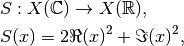
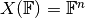
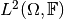
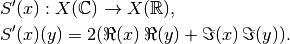

ComplexModulusSquared.derivative¶
-
ComplexModulusSquared.derivative(self, x)[source]¶ Return the derivative operator in the “C = R^2” sense.
The returned operator (
self) is the derivative of the operator variant where the complex domain is reinterpreted as a product of two real spaces.- Parameters
- x
domainelement Point in which to take the derivative.
- x
Notes
The derivative of the squared complex modulus

with  or , is given as

It is linear when identifying
 with
, but not complex-linear.
with
, but not complex-linear.Examples
>>> c2 = odl.cn(2) >>> op = odl.ComplexModulusSquared(c2) >>> op([3 + 4j, 2]) rn(2).element([ 25., 4.]) >>> deriv = op.derivative([3 + 4j, 2]) >>> deriv.domain cn(2) >>> deriv.range rn(2) >>> deriv([2 + 1j, 4j]) # [(3*2 + 4*1) * 2, (2*0 + 0*4) * 2] rn(2).element([ 20., 0.])